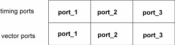
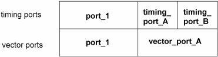

Timing ports and vector ports
In a multi-port context, the timing setup is defined in a multi-port timing specification (see Multi-port timing specifications), the vector setup in a multi-port burst (see Multi-port burst labels). Each of these two constructs specifies a set of ports, which are called timing ports and vector ports, respectively. The relations between timing and vector ports can be handled flexibly.
In the most simple case, the timing port set and the vector port set of one multi-port setup will be identical. This can be visualized as follows:

In principle, however, the ports of the timing specification and the ports of the multi-port burst are completely independent of each other. The set of the timing ports and the set of the vector ports are allowed to have no member in common. In addition, it is possible to combine a single-port vector setup with a multi-port timing setup, and also a single-port timing setup with a multi-port vector setup.
The following figure shows an example where two of the timing ports subdivide one of the vector ports:

In this constellation, all pins of vector_port_A will use the same sequencer program (which implies, for example, that CTIM instructions, if present, are executed at exactly the same position for all these pins). But the timing (for example the period length) can be different for the pins belonging to timing_port_A and for those belonging to timing_port_B.
Functional changes
- Introduced before SmarTest 6.3.2